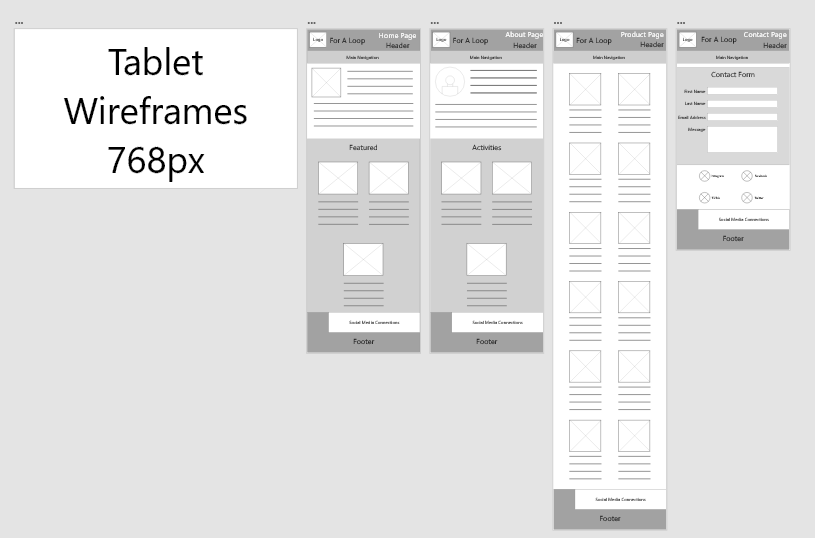

About
Background Info
“For A Loop” is a small woman-owned business that is run by one person. This person creates every object by hand. She crotchets and knits every item with love and puts in a lot of effort. It started as a hobby and has turned into a small business. She approached me because they knew me personally.
Problem
“For A Loop” has no website for their business. They want a website to showcase their products similar to a portfolio, and they want the website to give a good way for customers to contact the business owner. This website will be an excellent way to introduce new people to the business and business owner.
Process
I started with talking with the client to get website needs, then I created wireframes for each view and page. After getting approval for the wireframes, I laid out the HTML for the website. I then created the CSS for the desktop and tablet views in grayscale. I got feedback on those views and created the mobile view in grayscale. I then did a photoshoot for the products to use on the website. After that, I added the photos to the website, added color, and finally created the CSS for the contact form. I presented the website to the client and made the small changes the client requested.
Result
A completed website with four pages that showcase the products, tell about the business, tell about the business owner, and provides a way for people to contact the business owner. The website has mobile, tablet, and desktop views. The website has helped to garner more traffic for the business and increase sales.
Website Wireframes
-
Here are the desktop wireframes. They are low fidelity with just general organization and placement. The final website only included eight products instead of the shown twelve.
-

Here are the tablet wireframes. They are low fidelity with just general organization and placement.
-
Here are the mobile wireframes. They are low fidelity with just general organization and placement. The products page was changed for the final website. All photos were on the left side with text to the right. Each product would be separated by alternating color. This helped to clear up any confusion and be easier to read and view the webpage.
Website Page Views
-
Here is the desktop view of the homepage for the For A Loop website. It gives some information about the business and showcases featured products.
-
Here is the desktop view of the about page for the For A Loop website. It gives some information about the owner and showcases some of her interests.
-
Here is the desktop view of the products page for the For A Loop website. It showcases the different available products and gives some information about each product.
-
Here is the desktop view of the contact page for the For A Loop website. It provides a form that can be filled out to contact the owner. It also provides links to their social media sites.